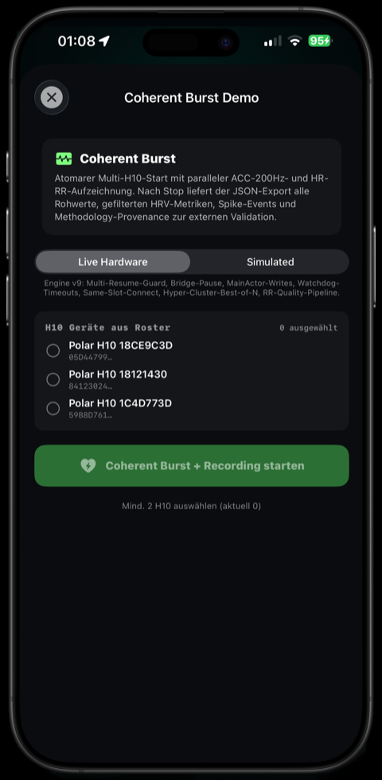
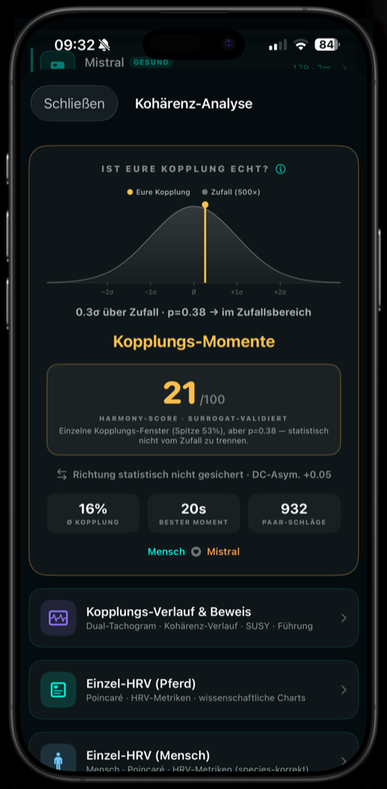
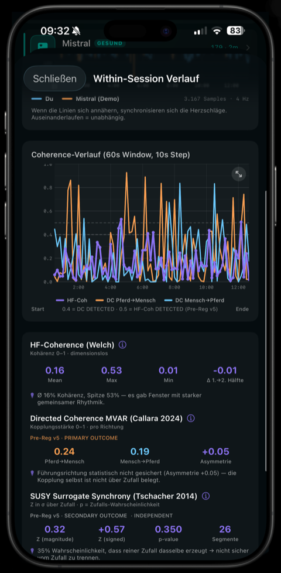
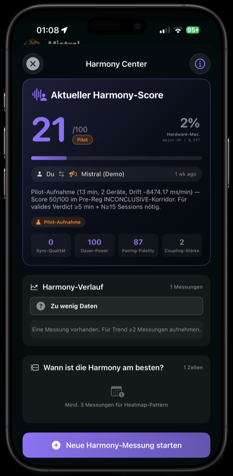

Zwei Herzen, ein Rhythmus — messbar.
Ob sich die Herzrhythmen von Pferd und Mensch aufeinander einstellen, ist eine offene Forschungsfrage — beschrieben wurde das Phänomen explorativ (Callara 2024). CARLON zeichnet diese Kopplung auf: millisekundengenau, reproduzierbar, exportierbar. Für Forschung und Dokumentation.
Das Aufzeichnungs-Instrument für deine Forschungsfragen.
Tiergestützte Arbeit wird breit praktiziert — belastbare Wirksamkeitsnachweise gibt es bislang nur für einzelne Anwendungsfelder. Was während einer Begegnung physiologisch passiert, wird dabei selten aufgezeichnet. Genau das tut CARLON: es liefert den Datensatz für deine Forschungsfragen, keine Beurteilung der Situation.
Die Kopplung lässt sich messen — nicht behaupten.
Dass sich die Herzrhythmen von Mensch und Pferd gerichtet einstellen — die Richtung abhängig von Vertrautheit und Verhalten —, ist in einer Peer-Review-Studie beschrieben. Es ist ein exploratives Phänomen in Erforschung, keine bewiesene Therapie — und genau diese Ehrlichkeit macht es glaubwürdig statt esoterisch.
Von der Begegnung zum harten Datum.
Die Begegnung
Menschen berichten, dass sie beim Pferd ruhiger werden. Ob und wie sich das im Herzrhythmus abbildet, ist offen — genau das ist die Frage.
Was der Herzrhythmus trägt
Herzratenvariabilität ist eine seit Jahrzehnten beschriebene physiologische Größe. Sie wird mit autonomer Aktivität in Verbindung gebracht — der Zusammenhang ist Gegenstand der Forschung, kein Ablesen eines Zustands.
Was aufgezeichnet wird
Wenn sich zwei Lebewesen aufeinander einstellen, können sich ihre Herzrhythmen annähern. Ob, wie stark, wer führt — CARLON zeichnet es auf, statt es zu behaupten.
Hart und reproduzierbar
Zwei EKG-Sensoren, millisekundengenau, im Nachhinein prüfbar. Kein Fragebogen, keine spätere Einschätzung. Das zugrundeliegende frame-genaue Synchronisations-Verfahren ist zum Patent angemeldet.
Zwei Herzen, ein Bildschirm.
Zwei Polar H10 — einer bei dir, einer beim Pferd — starten sub-millisekunden-synchron. Die App zeigt, ob und wie stark sich die Herzrhythmen koppeln.




Aus Erfahrung werden Daten.
Eine Kennzahl neben deiner Beobachtung
Eine physiologische Kennzahl, die vorher niemand erhoben hat — Aufnahme für Aufnahme, in gleicher Form.
Jede Sitzung dokumentiert
Jede Aufnahme wird gleich abgelegt und bleibt vergleichbar — saubere Dokumentation ohne Mehraufwand.
Daten, die deine Argumente stärken
Belastbare physiologische Daten stärken die Argumente gegenüber Verbänden und Förderern — damit das Feld eine belastbare, objektive Datenbasis bekommt.
Ein kaum vermessenes Feld, publikationsfähig
Mehrere Standorte, ein standardisiertes Verfahren, ein Tap zur Auswertung — so werden die größeren, dezentralen Studien machbar, die dem Feld den Boden geben.
Wer führt, wer folgt — messbar.
Bivariate MVAR-basierte gerichtete Kohärenz — ein parametrisches, rigoroses Verfahren für gerichtete Herz-zu-Herz-Kopplung im gemeinsamen Frequenzband beider Spezies (Callara 2024), gegen Surrogat-Daten (Shuffling) abgesichert. Gerichtete Kopplung statt bloßer Korrelation — bewusst enger definiert als allgemeine Kohärenz-Scores. Gerichtete Kohärenz beschreibt eine statistische Vorzugsrichtung im Signal; sie belegt keine Ursache, und gemeinsame Einflüsse wie Bewegung oder Atmung sind damit nicht ausgeschlossen. Unsere App liefert zusätzlich die Welch-Spektral-Kohärenz. Präregistrierte Hypothesen und eine Sham-Kontrolle sind der nächste methodische Schritt — den wir gemeinsam mit Forschungspartnern gehen wollen.
Und ausdrücklich nicht: CARLON Equine ist ein Forschungs- und Aufzeichnungs-Werkzeug. Es ist kein Medizinprodukt im Sinne der Verordnung (EU) 2017/745 und nicht dazu bestimmt, bei Mensch oder Pferd Krankheiten zu erkennen, zu überwachen, zu behandeln oder zu lindern. Keine Diagnose, kein medizinisches Urteil, keine Behandlungsempfehlung, keine Bewertung deiner Arbeit. Die Deutung bleibt bei dir; es ersetzt keine ärztliche oder tierärztliche Untersuchung.
Lass uns die Evidenz gemeinsam aufbauen.
Wir suchen Therapeut:innen, Höfe und Forschende, um ein kaum vermessenes Feld zu kartieren — nach demselben standardisierten Verfahren, über Standorte hinweg, mit direktem Draht zum Studienteam.